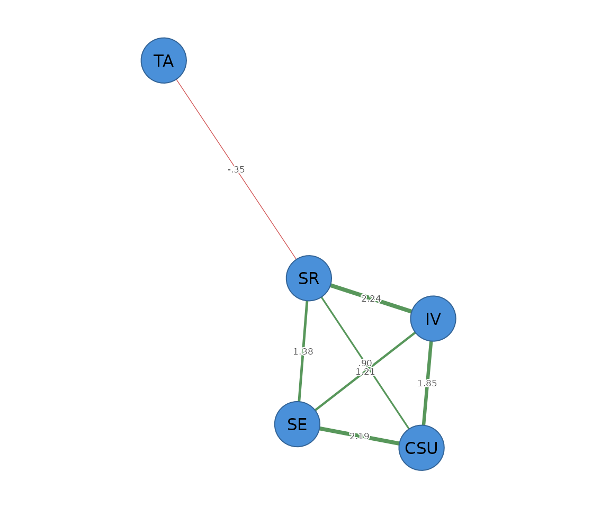

The Ising model is the binary analogue of the
Gaussian graphical model: a network for 0/1 data, where
each edge is a conditional association between two binary variables.
psychnets fits it by nodewise L1-penalised logistic
regression with EBIC selection (method = "ising",
equivalent to IsingFit::IsingFit()), or unregularised with
Wald-based pruning (method = "ising_sampler"). Both
self-certify via the nodewise GLM stationarity residual.
Dichotomising
The construct scores are continuous, so we first binarise them with
dichotomize() – here into “high” vs “low” on each
construct. A median split on coarse data is often badly unbalanced;
method = "rank" gives a balanced ~50/50 split robust to
ties.
bin <- dichotomize(SRL_GPT, method = "rank")
colMeans(bin) # endorsement ("high") rate per construct (~0.5)
#> CSU IV SE SR TA
#> 0.5 0.5 0.5 0.5 0.5Fitting the Ising network
fit <- psychnet(bin, method = "ising", rule = "AND")
fit
#> <psychnet> ising network
#> nodes: 5 edges: 7 (undirected)
#> optimality (KKT residual): 3.74e-10
certificate(fit)
#> method certificate kind certified
#> 1 ising 3.74261e-10 kkt TRUEThe edges are the symmetrised conditional associations between constructs:
as.data.frame(fit)
#> from to weight
#> 1 CSU IV 1.8544649
#> 2 CSU SE 2.1878175
#> 3 IV SE 1.2096869
#> 4 CSU SR 0.9036773
#> 5 IV SR 2.2416461
#> 6 SE SR 1.3762314
#> 7 SR TA -0.3468242Predictability for binary nodes is classification accuracy above the
marginal baseline (nCC); it needs the data the model was
fit on:
net_predict(fit, data = bin)
#> node type metric predictability accuracy
#> 1 CSU binary nCC 0.7066667 0.8533333
#> 2 IV binary nCC 0.7266667 0.8633333
#> 3 SE binary nCC 0.7000000 0.8500000
#> 4 SR binary nCC 0.7133333 0.8566667
#> 5 TA binary nCC 0.0000000 0.5000000Regularised vs unregularised
method = "ising_sampler" is the unregularised
counterpart; with alpha it prunes edges by a Wald p-value
instead of shrinking them.
samp <- psychnet(bin, method = "ising_sampler", alpha = 0.05)
as.data.frame(samp)
#> from to weight
#> 1 CSU IV 1.9267940
#> 2 CSU SE 2.2813844
#> 3 IV SE 1.3017708
#> 4 CSU SR 0.9405096
#> 5 IV SR 2.3094982
#> 6 SE SR 1.4857428
#> 7 SR TA -0.7694226Plotting
Pass the network object to cograph::splot() with
psych_styling = TRUE (spring layout, green = positive, red
= negative); ask for the predictability ring with
predictability = TRUE.
cograph::splot(fit, psych_styling = TRUE, predictability = TRUE)